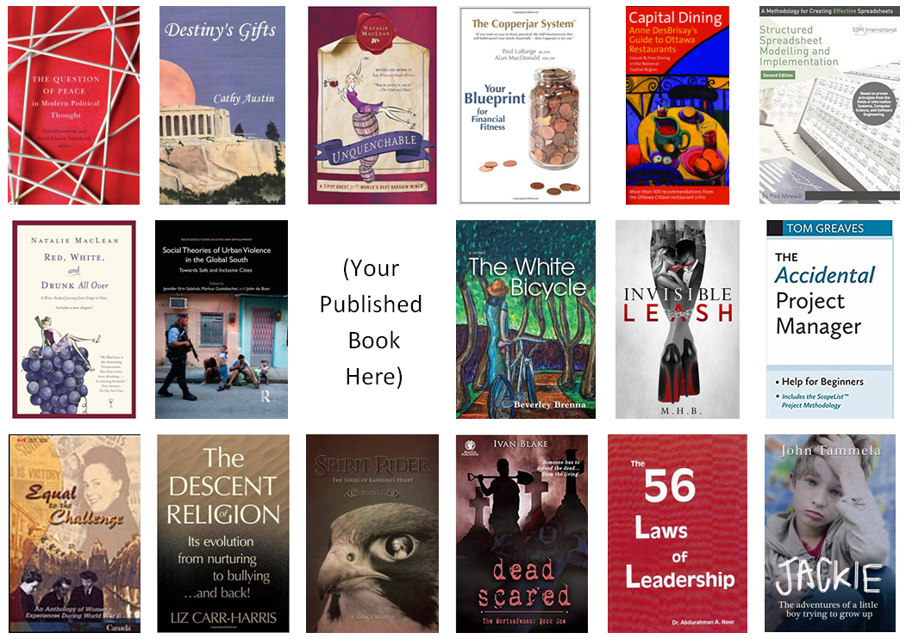

Books
Find your best voice

Whether your book is factual or fiction, I help you to polish it.
Think of me as your personal mentor, writing coach, and cheerleader.
Aspiring writer or published author?
No matter how experienced you are, I do some (or all) of these things.
- Help you to approach publishers or agents.
- Evaluate your manuscript, and give you a “fix list” of ways to improve it.
- Enable you to find, or strengthen, your unique writing voice.
- Motivate you to view your writing through your readers’ eyes.
- Teach you to be a “self-correcting” author.
-
Pay detailed attention to your:
- organization and structure
- overall coherence and consistency
- style, grammar and spelling
- images, layout and design.
I also fix your sentences, mend your punctuation, query any doubtful word choices,
point out any possible errors, and generally tidy up your MS — readying it to be released to the world.
Fiction or non-fiction?
If your book is a novel, I offer an extra skill set: the craft of storytelling.
Visit The Fiction Portal to learn how I help connect you with your audience.